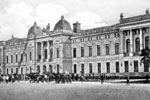
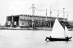

{kind=link}
По указу князя Григория Потёмкина в устье реки Ингул под руководством полковника Михаила Фалеева в 1788 году была заложена верфь, вокруг которой начал строиться город.
В 1790 году был спущен с верфи первый корабль — 46-пушечный фрегат «Святой Николай». Им было положено начало постройки в Николаеве крупных парусных военных кораблей и определена основная отрасль города — судостроение.
Николаев строился по плану, составленному Иваном Старовым — с прямыми улицами и кварталами правильной формы.
Долгое время в Николаеве дислоцировался штаб Черноморского флота. Во время Крымской войны он стал главной тыловой базой. Большинство предприятий, которые создавались в городе, относились к военно-промышленному комплексу, и в связи с этим Николаев много десятилетий был закрыт для посещения иностранцами.
{kind=link}
В марте 1816 года назначение на должность губернатора города получил адмирал Алексей Грейг. Находясь в этой должности до 1833 года, он многое сделал для обустройства Николаева. В городе были воздвигнуты портовые сооружения, создано кредитное общество, активизировалась морская торговля, появился Морской бульвар, начались работы по освещению города, прокладке тротуаров, открыты мужские и женские училища, построен приют. В 1820 году Грейг основал в Николаеве морскую астрономическую обсерваторию. В 1826 году он впервые в истории русского флота создал в Николаеве штаб, в задачу которого входила организация боевой подготовки флота в мирное время и разработка планов операций во время войны.
С 1860 года по 1871 год военным губернатором Николаева был Богдан фон Глазенап. По его ходатайству высочайшим повелением в городе в 1862 году был открыт коммерческий порт для захода иностранных судов, а город — для приезда и жизни иностранцев. В связи с этим в городе были учреждены иностранные консульства. Всё это послужило толчком к преобразованию Николаева в большой торговый порт.
{kind=link}
Уже в конце XIX века Николаевский порт занимал третье место после Санкт-Петербурга и Одессы по объёму торговли с заграницей, а по экспорту зерна, поставщиками которого были степные губернии — первое место в стране. Сам Николаев стал большим промышленным центром на юге Российской империи.
В 1918 году Николаев впервые пережил оккупацию иностранными войсками. В 1920 году здесь утвердилась советская власть.
С началом Великой Отечественной войны Николаев 16 августа 1941 года был оккупирован. Во время оккупации в Николаеве действовала подпольная диверсионная группа «Николаевский центр». 28 марта 1944 года город был освобождён от гитлеровских войск советскими войсками 3-го Украинского фронта и силами Черноморского флота в ходе Одесской операции[12], в частности, а также благодаря десанту Ольшанского. В послевоенное время Николаев стал одним из центров судостроения СССР. Суда выпускали три судостроительных завода — Черноморский судостроительный завод, завод имени 61 коммунара и завод «Океан».